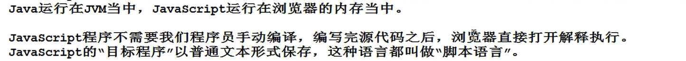

什么是JavaScript？
JS是网景公司的布兰登艾琪（JS之父）开发的。
JS是运行在浏览器上的脚本语言。
目的是为了处理用户与浏览器之间的请求问题。
JavaScript采用【弱类型编程语言风格】对【面向对象思想】来进行实现的编程语言。
脚本语言：
目标程序以普通文本的形式保存。
JS和JAVA的区别：

JS和JSP的区别：
在HTML中嵌入JS代码：
第一种方式：
通过事件句柄实现。


第二种方式：
脚本块方式
<script type="text/javascript" >
JS代码
</script>

JavaScript脚本块在html文件中可以多次出现，可以出现在任意位置，并且遵循自上而下的顺序执行。
JS注释
1.//
2./* */
第三种方式：
导入JS文件
<script type="text/javascript" src="文件路径"></script>
强类型语言：

JS变量：
声明变量：
var 变量；//系统默认undefined
给变量赋值：
变量名=值；
JavaScript是一种弱类型语言，没有编译阶段；一个变量可以随意赋任意类型的值。
变量未声明就使用会出错。
var a,b,c=0;//a,b为undefined，c=0
JS函数
语法格式：
第一种方式
function 函数名(形式参数列表){
函数体；
}
第二种方式
函数名=function(形式参数列表){
函数体；
}
JS方法穿参

JS中函数同名的话，后声明的函数会将前面同名的函数覆盖掉。
全局变量与局部变量

全局变量和局部变量重名时，就近原则

如果变量声明的时候没有使用var关键字，不论在哪里声明的，都是全局变量。
JS中的数据类型（原始类型,引用类型）
原始类型:Undefined,Number,String,Boolean,Null
引用类型Object以及Object的子类
在ES6（ECMAScript规范）又添加了一种新的类型：Symbol
JS中有一个运算符叫typeof，可以在程序运行阶段动态的获取变量的数据类型。
typeof 变量名
typeof运算结果是以下6个字符串之一：注意字符串都是小写
“undefined”
“number”
“string”
“boolean”
“object”
“function”
JS比较两个字符串是否相等用“==”
实现函数完成数字相加
function sum(a,b){
if(typeof a=="number"&&typeof b=="number"){
return a+b;
}
}
注意
var a=null；
typeof a;//结果为object
Undefined类型
Undefined类型只有一个值，undefined；
当一个变量没有手动赋值，系统默认赋值undefined；
也可以手动赋值undefined。
Number类型
1.Number类型包括
整数，小数，整数，负数，不是数字（NaN），无穷大（Infinity）
NaN
var a=100;
var a="中国";
alert(a/b);//结果为NaN
var a=100;
var a="中国";
alert(a+b);//结果为:"100中国"
Infinity
//除数为零，结果为无穷大
alert(10/0)
isNaN函数
用法：结果为true表示不是一个数字，结果为false表示是一个数字。
parseint函数
可以将字符串自动转换成数字，并且取整数位。
parseFloat函数
可以将字符串自动转换成数字。
Math.ceil()
向上取整。
Boolean类型
1. JS中的布尔类型只有两个值：true和false。
2.Booleean()可以将非布尔类型转换成布尔类型。if语句传入非布尔类型，系统会自动调用Boolean（）。
Boolean(1);//true
Boolean(0);//false
Boolean("");//false
Boolean("abc");//true
Boolean(null);//false
Boolean(NaN);//false
Boolean(undefined);//false
Boolean(Infinity);//true
"有"就是ture，"没有"就是false。